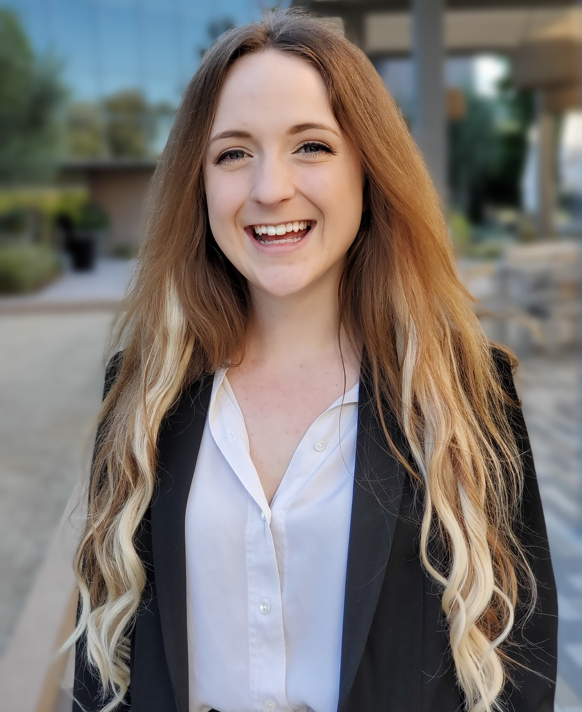
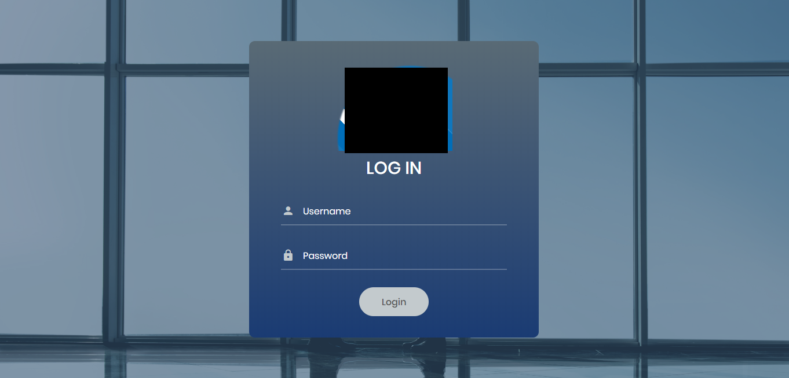

Alexandria Wolfram
Software Developer
Software development has always been like a never ending puzzle for me. I couldn't ask for anything more rewarding and engaging. My specialties include web development, database management, mobile application development, big data, and semantic translation.

Back Web Services Project | 2020
Served in both the Operations and Software Design Engineer in Test (SDET) roles
in a group project. Wrote detailed run guide and provided systems testing and load testing development.
Github: https://github.com/tpham523/CPSC_449_Project_1
Languages: python
Subcontractor Invoicing Web Portal | 2019-Present
Led design and provided both front-end and back-end development of an access portal website to keep track of subcontractor invoicing and project expenses. Provided responsive web design practices for mobile friendly viewing.

Languages: python, javascript, css
Request for Proposal Automation Project | 2019
Created and implemented the software for an automation project to search websites for possible requests for proposals and other important documents and send alerts via email when new requests are discovered.
Languages: java